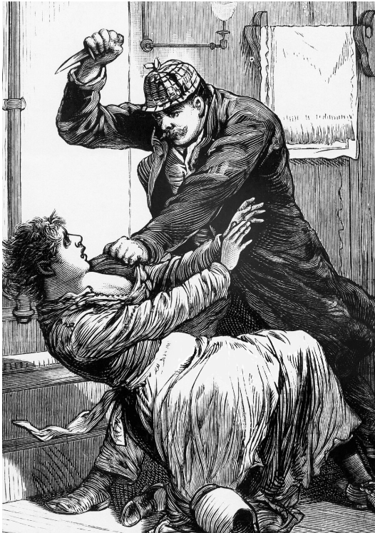

ARCHIVE #001
Jack the Ripper
- Archivo
- ARCHIVE #001
- Nombre del caso
- Jack the Ripper
- Estado
- UNSOLVED
- Ubicación
- Londres, Inglaterra
- Año
- 1888

EL CASO
Mató al menos a cinco mujeres en Whitechapel en 1888 y nunca fue capturado. Los asesinatos ocurrieron entre agosto y noviembre de 1888. La policía cerró oficialmente los archivos en 1892.
LÍNEA DE TIEMPO
- 1888 — Agosto a noviembre Ocurren los asesinatos en Whitechapel, Londres.
- 1888 Aparece la carta “Dear Boss”, la primera vez que se usa el nombre “Jack the Ripper”. La policía la toma en serio cuando la cuarta víctima, Catherine Eddowes, aparece con parte de la oreja cortada.
- Noviembre de 1888 Se catalogó el informe post mortem con la referencia MEPO 3/141.
- 1892 La policía cierra oficialmente los archivos del caso.
- 2024 Aparece un expediente policial perdido que perteneció al inspector Joseph Helson.
EVIDENCIAS
Carta “Dear Boss”
Fue la primera vez que se usó el nombre “Jack the Ripper”. La policía la tomó en serio cuando la cuarta víctima, Catherine Eddowes, apareció con parte de la oreja cortada. Está en los Archivos Nacionales de Kew (ref. MEPO 3/3153).
Carta a la Whitechapel Vigilance Committee
Hay una carta firmada como “Jack el Destripador” dirigida al Dr. Openshaw del London Hospital sobre el riñón humano enviado a G. Lusk (ref. MEPO 3/3157).
Informe post mortem
El informe de noviembre de 1888 está catalogado como MEPO 3/141.
Archivo recuperado
En 2024 apareció un expediente policial perdido, que perteneció al inspector Joseph Helson.
INVESTIGACIÓN
La policía tomó en serio la carta “Dear Boss” cuando la cuarta víctima, Catherine Eddowes, apareció con parte de la oreja cortada. Los archivos del caso se cerraron oficialmente en 1892.
TEORÍAS
Pendiente de investigación.
PREGUNTAS SIN RESPUESTA
Pendiente de investigación.
FUENTES
- Yahoo — “Jack the Ripper police file made public after 136 years”.
- National Archives — carta “Dear Boss” (MEPO 3/3153).
- National Archives — carta a la Whitechapel Vigilance Committee (MEPO 3/3157).
- National Archives — informe post mortem de noviembre de 1888 (MEPO 3/141).